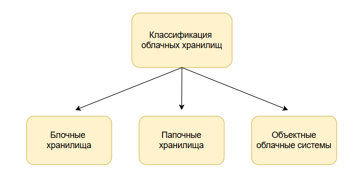
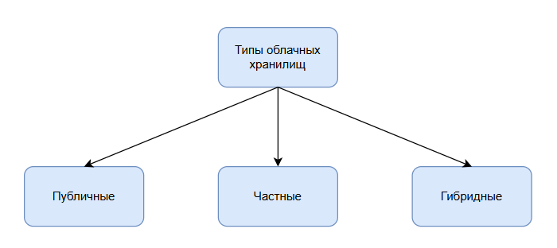
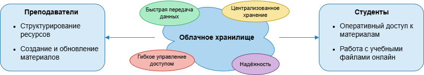

Автореферат по теме магистерской диссертации
Тема: Разработка облачного хранилища для образовательного процесса
Содержание
- Введение
- Теоретические сведения об облачных хранилищах
- Список литературы
Введение
Современный образовательный процесс требует высокой доступности и структурированности информации. С ростом цифровизации образовательных ресурсов возникает необходимость удобного хранения, совместного использования и управления данными. Облачные технологии предоставляют такие возможности, сочетая гибкость и масштабируемость с минимальными затратами на инфраструктуру. Их использование позволяет преподавателям и студентам работать с материалами из любой точки, обеспечивая непрерывность образовательного процесса и экономию ресурсов.
1. Теоретические сведения об облачных хранилищах
1.1 Понятие облачных технологий и облачного хранилища
Облачные технологии позволяют абстрагироваться от физической инфраструктуры и управлять вычислительными ресурсами через интернет. С их помощью организации экономят на локальных серверах, одновременно получая доступ к данным в любом месте. Различают четыре ключевых модели облачных решений:
- IaaS (Infrastructure as a Service) – аренда инфраструктуры для хранения данных и создания виртуальных машин. Преимущества: гибкость и отсутствие необходимости в поддержке физической инфраструктуры. Недостатки: зависимость от провайдера и ограничение кастомизации.
- PaaS (Platform as a Service) – предоставление платформы для разработки и развертывания приложений. Преимущество: готовая инфраструктура для быстрого старта разработки. Недостаток: ограниченная переносимость между платформами.
- SaaS (Software as a Service) – подписка на готовые приложения без установки. Преимущества: доступ к сервисам из любого места, автоматическое обновление. Недостаток: необходимость постоянного интернета и долгосрочные расходы на подписку.
- FaaS (Function as a Service) – выполнение отдельных функций по требованию. Преимущества: экономия ресурсов, управление функциями на стороне провайдера. Недостаток: адаптация процессов под архитектуру сервиса.
Облачные хранилища являются частью этих моделей, обеспечивая удобное хранение данных и масштабируемость по мере роста информации.
1.2 Классификация облачных хранилищ
Облачные хранилища различаются по архитектуре и способу хранения данных. Основные типы включают:
- Блочные хранилища – данные делятся на блоки с уникальными идентификаторами. Высокая производительность, но высокая стоимость и сложность поддержки.
- Файловые хранилища – интуитивная структура папок и файлов, легкая интеграция с ОС, но ограниченная масштабируемость.
- Объектные хранилища – абстракция хранения через API, поддержка больших объемов данных, но требуется освоение интерфейсов и настройка доступа.

1.3 Облачные хранилища в образовательном процессе
Преподавательский процесс формирует разнообразные типы данных: организационные материалы, содержание дисциплины, контрольные данные, сведения о группах студентов и итоговые оценки. Эффективное управление этими ресурсами требует инструментов, которые обеспечивают одновременно доступность, безопасность и возможность анализа прогрессии обучения. Традиционные носители информации и локальные хранилища постепенно теряют актуальность из-за ограничений по масштабируемости и совместной работе.

1.4 Преимущества и недостатки способов учета данных
Необходимость эффективного хранения данных в образовательном процессе требует анализа существующих способов организации информации:
| Способ | Преимущества | Недостатки |
|---|---|---|
| Письменные носители | 1. Нет привязанности к цифровым ресурсам 2. Долговечность физического хранения |
1. Перегруженность архивов и складов 2. Проблемы поиска информации 3. Риски хранения 4. Копирование |
| Локальные хранилища | 1. Работа с данными в offline 2. Безопасность |
1. Возможности утраты данных 2. Доступ к данным 3. Масштабируемость |
| Системы обучения | 1. Прогрессия 2. Организация учебного процесса 3. Доступность |
1. Стоимость 2. Ограниченность метаданных 3. Проблемы подключения |
| Облачные хранилища | 1. Быстрый доступ 2. Масштабируемость 3. Коллективный доступ к данным 4. Копирование |
1. Стоимость аренды сервера 2. Безопасность |
| Образовательные ресурсы | 1. Доступность | 1. Ограниченность метаданных 2. Проблемы интеграции |
| Специализированные приложения | 1. Многозадачность 2. Интеграции |
1. Перегруженность приложениями 2. Взаимозаменяемость 3. Стоимость |
1.5 Сравнительный анализ существующих облачных решений
На рынке представлены решения с различными подходами к хранению и интеграции. NextCloud предоставляет гибкую и многофункциональную платформу с поддержкой версионирования, однако требует сложной настройки. SeaFile ориентирован на синхронизацию между устройствами, имеет простую структуру папок и удобный интерфейс, но ограничен в интеграциях. Google Drive обеспечивает множество интеграций и интуитивный интерфейс, но бесплатный объем ограничен и расширение платное. VK Cloud предлагает отечественное решение с базовыми интеграциями, однако сервис пока нестабилен и больше ориентирован на бизнес-пользователей.

1.6 Выводы
Облачные технологии обеспечивают гибкость, масштабируемость и доступность данных, что делает их оптимальными для образовательного процесса. Сравнительный анализ существующих решений выявил недостаточную ориентацию на специфические задачи преподавания, что подтверждает актуальность разработки специализированного облачного хранилища. Внедрение такого решения позволит оптимизировать организацию учебного процесса, обеспечить коллективную работу и хранение исторических данных по дисциплинам.
Список литературы
- Иванов И.И. Методы анализа данных. — Краснодар, 2025.
- Дополнительные источники по облачным технологиям и хранению данных.
- Облачные технологии в бизнесе: [Электронный ресурс]. – 2024. – URL: https://rb.ru/story/oblachnye-tehnologii-v-biznese (дата обращения: 20.12.2024). – Текст: электронный.
- Что такое инфраструктура как услуга (IaaS)?: [Электронный ресурс]. – 2019. – URL: https://aws.amazon.com/ru/what-is/iaas (дата обращения: 20.12.2024). – Текст: электронный.
- В чем разница между PaaS, SaaS, IaaS?: [Электронный ресурс]. – 2024. – URL: https://sailet.kz/saas_paas_iaas (дата обращения: 21.12.2024). – Текст: электронный.
- Что такое облачное хранилище: принципы работы, виды, плюсы и минусы: [Электронный ресурс]. – 2022. – URL: https://sailet.kz/saas_paas_iaas (дата обращения: 22.12.2024). – Текст: электронный.
- IDC: к 2025 году общий объем новых данных достигнет 175 зеттабайт: [Электронный ресурс]. – 2019. – URL: https://www.tssonline.ru/news/idc-k-2025-godu-obshiy-obiom-novih-dannih-dostignet-175-zetabait (дата обращения: 22.12.2024). – Текст: электронный.
- В чем разница между блочным, объектным и файловым хранилищами? [Электронный ресурс]. – 2022. – URL: https://aws.amazon.com/ru/compare/the-difference-between-block-file-object-storage (дата обращения: 26.12.2024). – Текст: электронный.
- Многоуровневая расширяемая архитектура хранилищ бизнес-информации. LSA и SAP BW. Традиционный подход: [Электронный ресурс]. – 2024. – URL: https://habr.com/ru/articles/269727/ (дата обращения: 26.12.2024). – Текст: электронный.
- Файловые системы хранения данных [Электронный ресурс]. – 2020. – URL: https://itelon.ru/blog/faylovye-sistemy-khraneniya-dannykh (дата обращения: 26.12.2024). – Текст: электронный.
- Информационные образовательные ресурсы: классификация, разработка и реализация: [Электронный ресурс]. – 2024. – URL: https://www.work5.ru/spravochnik/pedagogika/informacionnye_obrazovatel_nye_resursy_klassifikac (дата обращения: 27.12.2024). – Текст: электронный.
- Носитель информации: [Электронный ресурс]. – 2015. – URL: https://ru.wikipedia.org/wiki/Носитель_информации/ (дата обращения: 28.12.2024). – Текст: электронный.
- Современные системы хранения данных (СХД): [Электронный ресурс]. – 2023. – URL: https://www.decosystems.ru/sovremennye-sistemy-hraneniya-dannyh-shd (дата обращения: 28.12.2024). – Текст: электронный.
- Seafile: [Электронный ресурс]. – 2018. – URL: https://en.wikipedia.org/wiki/Seafile (дата обращения: 29.12.2024). – Текст: электронный.
- NextCloud: [Электронный ресурс]. – 2021. – URL: https://nextcloud.com/ (дата обращения: 29.12.2024). – Текст: электронный.
- Google Drive: [Электронный ресурс]. – 2023. – URL: https://www.google.com/drive/ (дата обращения: 30.12.2024). – Текст: электронный.
- VK Cloud: [Электронный ресурс]. – 2022. – URL: https://vk.com/cloud (дата обращения: 30.12.2024). – Текст: электронный.
- Облачные технологии в образовании: [Электронный ресурс]. – 2020. – URL: https://edutech.ru/articles/oblachnye-tehnologii-v-obrazovanii (дата обращения: 31.12.2024). – Текст: электронный.
- Безопасность облачных хранилищ: [Электронный ресурс]. – 2021. – URL: https://habr.com/ru/articles/563728/ (дата обращения: 31.12.2024). – Текст: электронный.
- Сравнение облачных хранилищ: [Электронный ресурс]. – 2022. – URL: https://www.comparitech.com/ru/cloud/storage-comparison/ (дата обращения: 01.01.2025). – Текст: электронный.
- Версионирование в облачных хранилищах: [Электронный ресурс]. – 2023. – URL: https://nextcloud.com/versioning/ (дата обращения: 01.01.2025). – Текст: электронный.
- Коллективный доступ к данным: [Электронный ресурс]. – 2021. – URL: https://www.techradar.com/ru/news/best-cloud-storage-for-collaboration (дата обращения: 02.01.2025). – Текст: электронный.
- Облачные решения для малого бизнеса: [Электронный ресурс]. – 2020. – URL: https://rb.ru/story/cloud-business-solutions/ (дата обращения: 02.01.2025). – Текст: электронный.
- Масштабируемость облачных хранилищ: [Электронный ресурс]. – 2022. – URL: https://www.cloudwards.net/ru/cloud-storage-scalability/ (дата обращения: 03.01.2025). – Текст: электронный.
- Сравнение IaaS и PaaS для образовательных организаций: [Электронный ресурс]. – 2021. – URL: https://edutech.ru/articles/iaas-vs-paas (дата обращения: 03.01.2025). – Текст: электронный.
- Облачные технологии и GDPR: [Электронный ресурс]. – 2021. – URL: https://habr.com/ru/articles/592345/ (дата обращения: 04.01.2025). – Текст: электронный.
- Эволюция облачных хранилищ: [Электронный ресурс]. – 2020. – URL: https://www.datamation.com/cloud-evolution/ (дата обращения: 04.01.2025). – Текст: электронный.
- Платформы SaaS для образования: [Электронный ресурс]. – 2022. – URL: https://edutech.ru/articles/saas-platforms/ (дата обращения: 05.01.2025). – Текст: электронный.
- Файловые и объектные хранилища: практическое руководство: [Электронный ресурс]. – 2021. – URL: https://aws.amazon.com/ru/articles/file-vs-object-storage/ (дата обращения: 05.01.2025). – Текст: электронный.
- Интеграция облачных хранилищ: [Электронный ресурс]. – 2023. – URL: https://www.techrepublic.com/ru/article/integrating-cloud-storage/ (дата обращения: 06.01.2025). – Текст: электронный.
- Управление данными в облаке: [Электронный ресурс]. – 2022. – URL: https://www.cio.com/article/ru/cloud-data-management.html (дата обращения: 06.01.2025). – Текст: электронный.
- Архитектура облачных сервисов: [Электронный ресурс]. – 2021. – URL: https://aws.amazon.com/architecture/ (дата обращения: 07.01.2025). – Текст: электронный.
- Облачные хранилища для студентов: [Электронный ресурс]. – 2022. – URL: https://www.edutopia.org/article/cloud-storage-students (дата обращения: 07.01.2025). – Текст: электронный.
- Сравнение Google Drive, Dropbox и OneDrive: [Электронный ресурс]. – 2023. – URL: https://www.lifewire.com/best-cloud-storage-4176970 (дата обращения: 08.01.2025). – Текст: электронный.
- Облачные технологии и безопасность: [Электронный ресурс]. – 2021. – URL: https://www.csoonline.com/article/3233981/cloud-security.html (дата обращения: 08.01.2025). – Текст: электронный.
- NextCloud в образовательных учреждениях: [Электронный ресурс]. – 2023. – URL: https://nextcloud.com/education/ (дата обращения: 09.01.2025). – Текст: электронный.
- Влияние облачных технологий на образовательный процесс: [Электронный ресурс]. – 2022. – URL: https://edtechmagazine.com/k12/article/2022/01/cloud-impact-education (дата обращения: 09.01.2025). – Текст: электронный.
- Облачные вычисления и хранение данных: [Электронный ресурс]. – 2020. – URL: https://www.ibm.com/cloud/learn/cloud-storage (дата обращения: 10.01.2025). – Текст: электронный.
- Функциональные возможности SeaFile: [Электронный ресурс]. – 2021. – URL: https://www.seafile.com/en/features/ (дата обращения: 10.01.2025). – Текст: электронный.
- Облачные сервисы для преподавателей: [Электронный ресурс]. – 2023. – URL: https://edtechmagazine.com/k12/article/2023/02/cloud-services-teachers (дата обращения: 11.01.2025). – Текст: электронный.